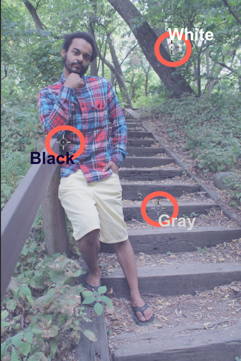
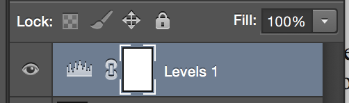
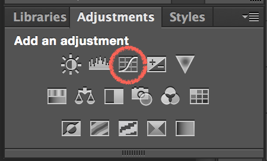

Photoshop 2
Portrait Retouching and Color Correction
Introduction
Welcome to Photoshop 2: Portrait Retouching and Color Correction!
In this class we will build on basic Photoshop skills, so it is important that you begin with a basic understanding of the program. We will concentrate on color correction, retouching, and beauty enhancements. We will cover advanced techniques used by industry professionals for portrait retouching.
In this class we will:
-
Explore RGB and CMYK color modes with exercises in color correction and skin tone balancing.
-
Use the Healing Tool group to remove blemishes, wrinkles and other unwanted distractions.
-
Learn to edit photos with techniques for beauty enhancement.
-
Add color to a black and white photo.
This class details the use of multiple layers and layer masks for advanced blending and non-destructive editing.
Prerequisites and requirements
Color Correction
In this exercise, we will take an outdoor portrait and correct the color in the image using several methods. We will work with Curves and Levels Adjustments.
Introduction to Color Modes
First, let's take a quick look at color modes. There are a handful of color modes in the graphic design world, but the two standard are CMYK and RGB.
CMYK
CMYK stands for the pigments Cyan Magenta Yellow Key. The "Key" color in CMYK is always a pure black.
CMYK is only used for printing and is a subtractive color mode, which means that the absence of all color creates white. CMYK is the standard for all printing devices, but Photoshop can approximate its look on a display. CMYK values can be very useful to reference for skin tone balance, which we will work with in a later exercise.
RGB
RGB stands for Red Green Blue. RGB is the standard color mode for any kind of display device including televisions, projectors, and computer monitors. Most digital cameras also take pictures in RGB. The image we will be using today is in this color mode.
RGB is an additive color mode. This means that adding all the colors together at full strength on the screen creates white. The absence of all three colors in this color mode creates color black. We can use this knowledge to evaluate a photo and determine which method will be best to correct it.
When an image in RGB mode is correctly color balanced, colors like White, Gray, and Black should all have very specific color values, as in this table:
| Color in Image |
RGB Values in Info Palette |
| White |
All color values equal 255 |
| Gray |
All color values are equal |
| Black |
All color values equal 0 |
Let's demonstrate the concept of these RGB values using the Color Sampler Tool and the Info panel.
Exercise: Sampling Color Values
-
Navigate to the class files folder, and open colorsample.jpg in Photoshop.
Color Sampler Tool
Used to see the RGB or CMYK values for a given point in image.
This tool is different from the Eyedropper tool, which allows you to click a point in the image to set foreground/background color.
-
Locate the eyedropper tool in your tool bar. Click and hold the eyedropper icon until a menu of options appears, then select the Color Sampler Tool.
-
Click once in the white area. You will see a small target-like icon appear along with the number 1. This is a color sampler. The info palette will also appear, displaying the RGB values of the pixel your color stopper has labeled #1.
Repeat with the black and grey areas.
Notice that the white values all equal 255, the black values are all zero, and the gray values are equal.
-
Try moving your mouse over color regions without clicking. Notice how the values of the top right and top left areas of the Info Palette display the color values in both RGB and CMYK.
In the next few exercises we'll apply our knowledge of RGB values, the color sampler tool, and the Info panel to identify a color cast.
Identifying a Color Cast
-
Navigate to class files folder and open colorcast.jpg in Photoshop.
This image has a nice range of color for us to work with. However, everything appears a bit gray. We want to improve the greens and browns of the natural background while preserving our model's skin tone and the colors in his shirt.
This gray effect is called a color cast. A color cast occurs when a single color is cast over the entire image. Outdoor photos tend to have a blue color cast from natural light, while indoor photos with incandescent lighting tend to have a yellow color cast. While we can visually identify this issue, for precision we are going to use the Info panel to identify the color cast.
-
Select the Color Sampler tool. Take a good look at your image to determine in the areas is closest to pure white, pure black and a gray midtone. Place a color stopper in each of these areas. You may follow how we've placed our stoppers by following the example here:

Your info palette should display values close to these
Let's take a look at the RGB values of our color samplers. The values of all three color stoppers show a greatest value of blue, and also a higher value of green. This means we have identified both a blue color cast and green color cast.
Curves
The Curves Adjustment is one of the most used tools for accurate and precise color correction and enhancement. Curves shares many properties with Levels, but has more options with increased precision.
Like Levels, the Curves Adjustment allows us to select individual RGB channels. We will use a quick technique using Auto Color Correction options, then try using the curves panel manually.
Exercise: Using Auto Color Correction
In this exercise we will use options in the auto feature to achieve quick and effective color correction.
-
There are a couple of ways to add a curves adjustment layer. You can find the Adjustments panel on the right (or navigate to it in the menu bar: Window > Adjustments ), and select the small graph icon.
You can also locate the small circle icon at the bottom of the layers panel, click it, and select "Curves..." from the menu that appears. A new curves layer will appear in the layers panel and the curves panel will pop up.
-
In the curves panel, find the button labeled Auto in the upper right and click it while holding down the option/alt key on your keyboard. A new options panel will appear.
-
First, check the box labeled "Snap Neutral Midtones". Under Algorithms, select either "Find Light & Dark Colors" or "Enhance Per Channel Contrast". Try both to see which looks better. When you are happy with the result, click OK.
-
Perfect! Finally, toggle the curves layer on and off in the layers panel to see the before and after.
Levels

Click the levels icon in adjustment menu to create a levels adjustment layer. The properties palette will appear displaying our levels adjustment options.
-
Channel: This drop down menu allows us to work on all colors simultaneusly or each color individually. In this exercise, we will work with each color individually.
-
Input Levels: These three boxes represent the black gray, and white colors in that color channel. By changing these values, we can adjust the lightness and darkness in the image.
-
Histogram: This is a graphical representation of the various light and dark color values in the image. A dark image will have most values on the left side of the gragh, and a light image will have most values on the right.
-
Output Levels: This section is another way for use to lighten or darken the image. It is not common to use Input Levels and Output Levels on the same image, but in some cases, it might be appropriate.
Exercise: Color Correction With Levels
Now we'll adjust the same image using levels instead of curves. Make sure your curves layer is turned off for this exercise.
In the Histogram for this image, we can see that the information is not evenly dispersed across the spectrum; it's all packed towards the center. When the Histogram looks like this, we should use the following method.
We will move the black and white sliders on each individual color channel to the point where the image information begins.
-
Let's start with the Blue color Channel. From the channels drop down menu currently labeled RGB, choose Blue.
-
Click and drag the black slider towards the center of the histogram until it reaches an area with image information. Repeat with the white slider. Your levels should now look similar to this:
The colors in your photogragh will apear a bit wild for the time being. This is just part of the process. After you work through all channels the colors will balance.
-
Repeat last step with the Green and Red Channels.
Once we have corrected all three channels, the image starts to look much better.
-
Select RGB channels for some final corrections. A new histogram will appear:
Notice that the new histogram is much more spread out, and the image looks much better.
-
In the RGB channel, use the gray slider in the center to brighten or darken the image. Moving the slider left will brighten, while moving it right will darken.
Although our image looks much better, there is still some blue color cast. Let's use our info palette to check our RGB values.
-
In the top menu bar, click Window > Info
The Info Palette provides us with both the RGB values of our original image (left of the slash), and the RGB values after our adjustments (right of the slash). We can see our White Color Sampler(#1) and Black Color Sampler(#2) have perfect RGB values for pure white and pure black. However, our Gray Color Sampler still has higher blue and green values.
-
Select the Blue Channel from the channels menu inside the Levels panel. Click and drag the gray slider to the right to decrease its value until it reaches a value close to the red and green values in the info panel. Do the same with the green values.
-
Click on the eyeball icon to toggle the visibility of your Levels Adjustment Layer to compare our color corrected image with the original image.
Compare Original and Color Corrected image
Great Job! You have color corrected an image using some of these most important industry standard tools in Photoshop.
Layer Masks
In the previous exercises we learned a few techniques to color correct our image. Those alter the entire image, but what if we wanted to apply a color change only to part of an image? In this exercise, we will use a Layer Mask to isolate a specific area. The Mask will allow us to make edits in one area without affecting the color balance in the rest of the photo.
The wooden stairs in this photograph have turned gray from weather and age, so let’s liven them up by giving them a warmer color. In this exercise we will mask off the stairs, and enhance their color with a Curves adjustment.
Understanding Layer Masks
Layer Masks allow us to selectively show and hide objects or effects in an image. Layer Masks display as a thumbnail next to our Layer thumbnail:

In this example a Layer Mask has been added to a Levels Adjustment Layer
In a Layer Mask, black conceals and white reveals. This means that where the Mask displays black the layer effect is disabled, and where the Mask displays white the layer effect will show. We can paint directly on the Layer Mask using our tools, making it very easy to alter our mask by painting in black or white.
Think of the Layer Mask as stencil. In the area it covers the effect of our layer will not be seen.
Using Quick Mask
The Quick Mask tool allows us to use the Brush tool and the colors black and white to create a selection. As we use these tools, anything colored in red is considered outside of our selection, and anything that is the normal color of the image is considered inside the selection. Since it is usually easier, we will start by filling in the shape we want to enhance with red and inverse the selection later.
Note: At this point you should have a Curves layer and a Levels layer from our earlier exercise. Only one should be visible at the moment.
-
First, create a new layer. Then select the Quick Mask icon on your toolbar to activate it. Or simply use the keyboard shortcut ‘Q’ on your keyboard to begin editing in Quick Mask Mode.
-
Begin painting your quick mask by selecting the brush tool. Make sure your paint brush has low hardness and an opacity of about 60%. Paint over the stairs, the dirt and leaves to the right of the stairs, the banister and tree trunks using black. If you paint over an area by mistake, use the eraser tool to remove the mask.
If red doesn't show up when you paint in quick mask mode, check your channels and make sure that the bottom channel is visible.
-
Press Q to leave Quick Mask Mode. You’ll see a marching ant border appear around your selection.

-
With your selection active, go to the Adjustments panel and click on the Curves icon. Photoshop will automatically turn your selection into a Layer Mask.
A thumbnail image will also appear in your layers palette. Remember that white reveals and black conceals. We will have to invert the layer mask to make change to the wooden stair area.
-
Click directly on the layer mask thumbnail in your layers palette to bring the masks dialogue box up. Click invert to invert your layer mask. Return to Curves by clicking the curves icon.
Exercise: Detailed Curves Adjustment
Now that we have our layer mask we can edit the curves layer and alter only this new masked area.
-
From the channels drop down menu currently labeled RGB, choose Red. To increase the values of red, create a point by clicking along the diagonal line and dragging upwards to create an adjustment as shown:

-
Select Blue from the Color Channel drop down menu in your Curves dialogue box. To increase the appearance of yellow in our image, lower the value of blue. Create a curve as shown:
Let’s add some final contrast to image by creating an S-curve in the combined RGB channel.
-
Select RGB from the Channels dropdown menu and create an s-curve by selecting a point on the upper part of the diagonal and dragging upward (making the dark part darker and the highlight part brighter). Then select a point on the lower part of the diagonal and drag downward. Create a curve as shown:
-
To create a more natural look, you can drop the opacity of curves adjustment layer. Select your Curves Adjustment Layer in your Layers Palette. Locate the Opacity slider in the upper right area of the palette and lower the opacity to about 80%. This helps blend the adjustment by making the effect more transparent.
-
Finally we'll blend the edges of the layer mask. In the properties panel, click the mask icon to switch to the Mask Palette. Increase feather, and decrease the density. Feather creates a softer edge, and density controls the opacity.
Check out the before and after of our Curves Adjustment with Layer Mask:
Additional Exercises
You can use this technique for subtle edits like this, or to achieve stronger effects.
Try using these Layer Mask and Levels or Curves Adjustments to make more changes:
-
Alter clothing: Enhance the yellow color of the model’s shorts, or alter the color of his plaid shirt.
-
Enhance the contrast of the green foliage.
Balancing Skin Tone
Skin tone is one of the most suble and varied elements you will work with in photo editing. All people have different color representation in their skin tone, and as a retoucher, it is your job to use your knowledge of color balance to improve the appearance of all skin tone variations from different races and ethnicities. Our goal is not to change skin color, but to reduce color casts that tend to affect skin differently and enhance color channels to make skin look healthy.
CMYK and Skin Tone
When balancing skin tone, photo retouchers often use CMYK values to make color adjustments. Luckily, Photoshop gives us the flexibility to sample colors in both RGB and CMYK no matter what color mode we choose when we create our document.
Curves and CMYK
The Curves adjustment is important in skin tone balancing because of its compatibility with CMYK values. At first glance, the Curves adjustment seems to use only RGB values because the channel options only offer Red, Green and Blue. However, if we apply our knowledge of Complementary Colors, the ‘Red’ Channel is actually the Red/ Cyan Channel. If you click and drag downwards in the red channel, you will increase cyan. Likewise the green channel is the green/ magenta channel, and the blue channel is the blue/yellow channel.
Skin Tone Values
-
Open skin_tone.jpg
We'll start by analyzing a color sample in CMYK from a neutral area of skin.
-
Select the color sampler tool in the tool bar by clicking and holding the eyedropper tool and selecting it from the dropdown menu that appears.
-
Find a neutral area of skin in the photograph; a place that is not in shadow or highlight, and contains no wrinkles or blemishes. This is a good neutral area:
-
After placing a color sampler, the Info Panel will appear and display the RGB values of our color sampler labeled at ‘#1.’ To change these RGB values to CMYK values in the Info Panel, click the eyedropper icon under the ‘#1’ and choose CMYK from the dropdown menu.
-
The Info Panel now displays the CMYK value for this color sampler. Each color sampler can be individually set to display different color modes. If you sampled an area similar to our example, your values should be close to these:
C=26, M=48, Y=60, and K=4
-
We can now use the following guide to help decide how we should increase and decrease the different color channels. Comparing to our current color sampler, the closest value on our guide is the light brown color.
There are endless skin tone variations among people, and there can be variation across the face and body on an individual person. Our goal is not to match this value exactly, but to use it as a guide and decide visually what effect makes our model's skin look it's best.
-
Create a Curves Adjustment Layer. Our goal is to move our current CMYK values closer to the CMYK values in our guide.
-
Select the Red Channel from the Channel dropdown menu. To decrease Cyan (increasing red), create a point on the center of the diagonal line and drag up slightly. The Cyan values will decrease in the Info Panel. The Info Panel will help you determine when you are close to your guide value. The image might appear to have a strange color cast as you work. Don’t worry about correcting this until you are finished adjusting all channels.
-
Next, slightly increase the Magenta value by opening the Green Channel from the drop down menu. Click and drag downward to increase Magenta, and subsequently decrease Green. The magenta value will increase in the info panel.
-
Increase the value of Yellow by opening the Blue Channel. Click and drag downward to increase yellow and decrease Blue. The Yellow value will increase in the info panel.
-
To adjust the value of ‘K’ or Black, go to the combined RGB Channel. To decrease black and to create some brightness, click in the upper part of the diagonal and drag upwards.
-
Look at the Info Panel to compare the new CMYK values with the original values. The new value may be slightly different than the values of the color guide, and that is okay. All skin tones are unique, and the color guide isn’t law, it’s simply a guide.
Original values on left/New values on right
Healing Tools for Retouching
Photoshop has a powerful selection of healing tools that we can use to correct portrait images. These tools can seem very similar, and it can be tricky to decide which one to use. This section focuses on comparing and contrasting them, and exploring which tool is most suitable for which tasks.
An Overview of the Tools
We will cover the following tools in this exercise:
- Red-Eye Tool
- Spot Healing Brush
- Healing Brush
- Patch Tool
- Clone Stamp
Analyze the Photo
This is a very nice portrait, but to make it look more polished there are some small things we might want to correct.
-
Red Eye. This can be fixed using the Red Eye Tool.
-
Some blemishes on the skin. This can be fixed using the Spot Healing Brush Tool
-
The model has a line imprint between his eyebrows from his sunglasses. This is a great area to practice using the Healing Brush Tool.
-
We will also practice using the Patch tool to remove the "OGG" sign on his shirt.
-
Finally, we will practice using the Clone Stamp tool to remove some shadows on his forehead and under eye area.
Red Eye
Red Eye Tool
A tool specifically designed to removing red eye effect in photos.
With the tool selected, simply click the red part of the affected eye and Photoshop does the rest.
-
Right click on the background layer and choose Duplicate Layer.
-
Select the Red Eye Tool. You can find it under the Spot healing brush tool, along with our other retouching tools.
-
Hover directly over the pupil of the eye, and click to make the red eye disappear. Repeat on the other eye.
Spot Healing Brush Tool
The Spot Healing Brush allows us to replace small corrections without selecting a source first. The tool attempts to find an appropriate area to sample pixels from and replaces them automatically. In the case of skin retouching, the Healing Tools attempt to sample areas of clean, blemish free skin. For simple corrections, this works very well. For more complex corrections, this can cause problems. The Spot Healing Brush can pull unwanted pixels to the correction if we press and drag the mouse. For that reason, it is best to use the tool in either single clicks or very short strokes.
Spot Healing Tool
Intelligently analyzes the area of the image the user clicks on and replaces it with a context-aware guess at what the selected area should look like.
Extremely useful for small, quick fixes of blemishes and other spots.
-
Select the Spot Healing Brush Tool.
-
Create a new layer and name it "Healing". Make sure you work on this layer for all the retouching exercises.
-
In the options menu bar across the top, make sure “Content-Aware” is selected and “Sample All Layers” is checked.
-
Set your brush hardness to zero in the brush options menu.
-
Locate blemishes, and hover over the area. Adjust the size of your brush using your right bracket key to increase size and left bracket to decrease size. Adjust your brush size until it is just barely larger than the blemish. Click to make the spot disappear. Repeat the action until you are happy with the result.
Healing Brush Tool vs. Clone Stamp Tool
The Healing Brush Tool and the Clone Stamp Tool work very similarily. Both require you to hold the Alt/Option key and click to set a source.
The major difference between the two tools is that the Healing Brush Tool samples from the source and the surrounding area to blend; the Clone Stamp Tool is a direct copy of the sampled source. Try the following example exercise:

Healing Brush Tool
Automatically blends texture from a sampled area with the color and luminosity of the area on which the user draws.
Hold Alt/option and click to set a sample/source point, then use the brush to paint that texture onto another part of the image.
-
Open face_retouching.jpg.
-
With the Healing Brush Tool, hold down the Alt/Option key and sample a part of the skin. Then click on the eyebrow.
Notice that the brow does not change much.
-
Try using the Clone Stamp tool to do the same thing:
Notice that the area I clicked copied the sample exactly.
Now that we understand the difference, we have a clearer sense when to use which tool. If you want to clean some edges or patterns in an image, the Clone Stamp tool is a better choice. If you want to blend your sampled source with surrounding background to make it look natural, use the Healing Brush Tool.
Healing Brush Tool
The healing brush tool is ideal for correcting areas that are a bit larger, such as a wrinkles or scars. Unlike the Spot Healing Brush Tool, which automatically attempts to find and sample clean areas, the Healing Brush Tool requires you to select an area to sample before you begin to heal. Since you choose where you sample from, you have greater control over the correction.
This is a good place to practice the Healing Brush Tool.
-
Select the Healing Brush Tool from the Toolbar. Make sure you are still on the Healing Layer.
-
Adjust your Brush size to the approximate width of the mark. In this case, the size is about 20px. Make sure your hardness is still set to zero.
Before we begin healing, we must set a sample point on a clean area as close as possible to our problem area. This helps Photoshop use the most similar pixel information possible to create a realistic correction. Let’s set our sample point directly above where the mark begins on the left side.
-
Set the sample point for the Healing Brush by holding down Alt/Option and clicking. Your brush turns into a small target while Alt/Option is held down.
-
With our sample point set, we are ready to heal. Paint with one careful stroke from left to right. You will see a cross hair appear directly above the area you’re healing. This indicates the location Photoshop is taking pixel information from as you use the tool.
Once you release your mouse, notice how Photoshop automatically blends the area. If your outcome is not successful, undo with Ctrl/ Cmd + Z and try again. For some corrections, you may have to reset your sample point several times as you correct.
Clone Stamp Tool
The Clone Stamp works like a paint brush. We select a good area of the image, then press and drag over the area of bad information. As we move the cursor, the source moves along with it. This way we can even replace patterns as long as we place the source carefully.
We’ll use the Clone Stamp Tool to directly copy an area of pixels to draw a third eye on our portrait model. We’ll set our source at the left eye, then clone the pixels over the forehead.
Clone Stamp Tool
Similar to the Healing Brush, but this tool make an exact copy of the sampled wherever the user uses the brush.
Hold Alt/option and click to set a sample/source point, then use the brush to paint a clone of that area onto another part of the image.
-
Create a new layer and rename it “Clone Stamp” By creating a new layer for our Clone Stamp corrections, we are practicing non-destructive editing. This means that our edits are not altering our original image on a seperate layer.
-
Select the Clone Stamp Tool. In the options bar make sure your opacity is set to 100%, and sample is set to "Current and Below". Since we are editing on a separate layer, it is critical that we set our Clone Stamp Tool to sample the layers below, since our current layer is blank and has no pixel information.
-
Set the source at the left eye by holding the Alt/Option key and clicking on the pupil.
-
Once the source is set, you can paint the new eye on his forehead. If you where to continue painting in all directions, you would eventually repaint the entire photo!
-
Now that you have practiced and played a bit with the Clone Stamp Tool, let's use it for some practical retouching work. Delete this layer or use History panel to go back to the last step before the Clone Stamp Tool.
Reducing Under Eye Shadows with Clone Stamp Tool
In this exercise we will use the Clone Stamp Tool to decrease the appearance of under eye wrinkles and shadows. Shadows around the eyes is a very common thing to retouch, and the clone stamp is the best tool for the job. In order to preserve the character of the face, make sure you don't eliminate the shadows and wrinkles, only reduce their appearance. We will sample from the bright area of skin below the dark undereye area, and reduce the opacity of the Clone Stamp significantly to achieve a natural look, using our options to soften and blend our retouch work.
-
In the Options Bar, adjust the size of your brush to roughly 20px. In the Brush Options Menu, reduce the Hardness to zero to create a soft feathered edge. Lower the opacity to 10%. Select ‘Lighten’ from the Mode Options. Again, make sure sample is set to "Current and Below".
Double check your Layers Panel to make sure you are working on the "Clone Tool" layer.
-
Alt/Option click to set your source as a bright portion of the skin toward the inner corner of the left eye and under the dark circle area. Match your placement with this example:
-
Paint over the length of first dark line starting from inner corner. We are working at a very low opacity, giving us fine control. Don't forget to reset your sample if necessary.
-
Check to make sure you haven’t gone overboard by zooming out and toggling the visibility of the "Clone Tool" Layer on and off to compare your work with the original. Try lowering the opacity of the Clone Stamp layer to blend and reduce its appearance.
Patch Tool
The Patch tool allows us to move a selected portion of an image all at once. This allows us to heal a much larger section than we could with the other healing tools. The Patch Tool also heals the edges of the selection after it is moved, hiding the correction.
Patch Tool
Allows you to select a section of the image and drag to replace another portion of the image with its contents. Automatically heals the edges of the selection as well.
Use the mouse to draw a selection around the area you wish to replace and drag it to a new location on the image.
In this exercise, we will use the Patch Tool to remove the graphic from our model’s shirt.
-
Select the Patch Tool from the Toolbar. Make sure you are still on the Healing Layer.
-
Set your Option Menu Bar for the Patch Tool as follows:
-
We will use the Patch Tool to remove about half a letter at a time. With the Patch Tool, click and drag a loose selection around the top half of the first letter as shown:
-
Hover over the center of your selection and press and drag upwards into a blank area of the t-shirt. Photoshop displays a preview as you do this. Try to avoid areas of the shirt with wrinkles or the collar. Release your cursor, and you will see the top part of your letter disappear.
-
Repeat steps 4-5 with the bottom half of the letter. Then move onto the next two letters. When you are done you will have a plain white t-shirt!
Colorizing Black and White Photos
In this exercise we will use what we've learned about layers, masks, and color to colorize a black and white photo.
This is a technique that portrait editors sometimes use to preserve and enhance old family photos, which are often in black and white.

Example: Before and after colorization
-
Open colorize.jpg
-
Go to Image > Adjustment > Shadow/highlights.... Set shadow at about 25% to 35%. This effectively reduces shadows and makes colorization easier.
-
Choose the quick selection tool and start making selections of different areas of the photo that will be different colors. To exclude some selection, hold Alt/Option and click on the part you don't want to select. Use a small brush size of 5-10px to make a more precise selection.
Make a selection similar to this
-
Once you have a selection you are happy with, click Refine Edge in the top option bar. Check the Smart Radius box, and adjust the various sliders to refine your selection. When you are done click OK.
-
At the bottom of the layer panel, click the Create a new fill or adjustment layer icon and choose Solid Color.... Rename the layer "Background".
Choose a color for the background that compliments the subject.
-
To make the color look natural, try different blend modes in the layers panel, Multiply, Overlay, Soft Light, and Color, and turn down the opacity of the layer.
-
Repeat steps 3-6 with hair, clothes, eyes, mouth, teeth, etc. Remember to rename your layers to keep everything organized.
For complextion, we can use the skin tone guide. For this image we will use the third guide. Input the CMYK value on the right bottom of the color panel. Adjust as needed.
After some hard work, you will have multiple layers like this:
-
Now it's time to make some final adjustments. Double click on the layer masks, and increase feathering to make the edges look natural. Then click on each layer mask, and use Brush Tool to refine your selections as needed. Remember, black conceals and white reveals.
Congratulations! You successfully colorized a black and white photo! Although it's difficult to make a black and white image look like an original color photo, it can be a facinating method to breath new life into old photos.

Before and after colorization
Beauty Enhancement
People are naturally drawn to the human face. It is how we recognize one another and communicate our feelings and emotions. Enhancing features of the face can create striking and dramatic images that engage the viewer and heighten the quality of any portrait.
Here we will learn techniques, but how you use them may depend on the purpose of the photo. Clothing and beauty models, for example, are often heavily edited. However, a portrait or headshot should be polished but not overly changed so that it retains the subject's personality. In many cases the job of a photo retoucher is not to change the way the subject looks, but to reduce any distractions and enhance natural features to create a striking image. We will focus on this goal in these exercises.
We will apply many of the tools and features in Photoshop that we already know, and introduce new tools and use blending modes to achieve quick and effective results.
Portrait Retouching Workflow
Let’s quickly review some of the key retouching techniques we have learned so far. Open enhance.psd
Take some time to explore the edits already in the document by exploring the Layers Panel. Each layer is labeled with either the tool used, like the healing brush, or the effect achieved, such as color balance.
To see how each layer alters the image, toggle the visibility icon on each layer.
When starting a new retouching project it can be helpful to begin with basic techniques before making beauty enhancements, so we will follow that pattern here. Let's get started!
Adding sharpness/sparkle to eyes
In portraits, eyes are usually the focal point. With this simple technique we can heighten the sparkle and intensity of the eyes.
Sharpen Tool
The Sharpen Tool is used to selectively increase contrast or sharpness of part of an image.
It works like a brush, meaning you can adjust the size, shape, and intensity of the effect in the Options bar.
The Sharpen Tool lives under the Blur Tool icon in the Tools panel. Click and hold the Blur Tool icon to reveal and select the Sharpen Tool.
-
Select the "Original" layer and click on the New layer icon to create a new layer.
-
Don't forget to rename the layer "Eyes" by double-clicking on the "layer 1" text. Naming layers is a good habit to keep things organized.

-
Select the Sharpen Tool from under the Blur Tool. Click and hold the Blur Tool icon to reveal and select the Sharpen Tool.
-
In the Options Panel across the top, make sure Sample All Layers is checked. This lets us create the sharpen effect on our new layer while sampling our original image. The default settings of normal mode and 50% strength will work fine for this effect.
-
Adjust the brush size to roughly 25px. Begin to paint over the eyes with the Sharpen Tool. As you paint you will see highlights, texture and color become more defined. This effect is especially dramatic on light colored eyes, but will define darker tones as well.
-
If you think the effect is too strong, go to the Layers Panel and try dropping the opacity of the layer slightly to blend the effect.


Before and after sharpening
Defining Eyebrows and Eyeliner
-
Create a new Curves adjustment layer:
-
Click the top layer in your layers panel. This means that the next layer we make will be the very top layer.
-
Create a new Curves adjustment layer by clicking the Curves icon.
-
Rename the layer “Eye Brows.”
-
Change the Blending Mode of the layer from ‘Normal’ to ‘Multiply.’ This will darken the entire image.
We will use a Layer Mask to restrict this darkening effect to the area of the eyebrows and eyeliner.
-
Invert the Layer Mask on the “Eye Brows” Layer. Double click to open Property > Choose Mask and click on invert.
It will now appear as a black square. Remember that black conceals in a Layer Mask. With the Layer Mask selected, we will use the Brush Tool to carefully paint in white and reveal the darkening effect over the eyebrows and eyeliner.
-
Select the Brush Tool, lower its hardness to 0 and the Opacity to 40%.
-
Activate white as the foreground color in your Tool Bar.
If black happens to be the foreground color, simply press (X) on your keyboard to switch. Begin to paint in white over the eyebrows at 40%. Adjust your brush size appropriately as you paint over different areas.
-
Once you have noticeably darkened the eyebrow and eyeliner areas, blend the effect by lowering the opacity of the layer. It is easy to over-do this technique, so don’t be afraid to reduce the opacity. A little bit of definition can go a long way.
In this before and after example the layer is lowered to 68% opacity. As you see the effect appears to be subtle. However, if you toggle the visibility on and off, you will see that it is still a significant difference.
Enhancing Lip and Cheek Color
In this exercise we will add some soft makeup effects by enhancing the lip and cheek color of our portrait. This is another adjustment layer with a layer mask.
-
Create a Hue/Saturation Adjustment Layer. If necessary, drag and reposition the layer to the top of the Layers Panel. Rename the layer "Lips and Cheeks".
-
Adjust the Hue slider to a value of (-24) and the Saturation Slider to (+16). The hue and saturation of the entire image will change, but we will fix this. If you prefer a more magenta or red tone for the lips, feel free to adjust the Hue slider to your liking.
-
Follow steps 3-5 in the previous exercise to invert the Layer Mask, and select a soft 30% opacity brush with a color of white.
-
Let's proceed with lip color first. Adjust the brush size to about 35 px and begin to paint over the lower lip. Decrease the brush size as you begin to paint over the corners of the lips and the upper lips. With this low opacity brush technique you can slowly build color for a natural look
-
Moving on to the cheeks, we will add the effect of blush. Lower the brush opacity to 10%, and increase the brush size to about 100px. Paint over the cheek bones and apples of the cheeks in the position of the example marks below.
-
Pull up the Layer Mask Panel by double clicking on the Layer Mask icon (currently appearing as a mostly black square). Increase Feather to soften and blend the effect.
-
Experiment with different blend modes in the Layers panel such as "Color" or even the dramatic "Vivid Light", "color burn", etc. Drop the opacity of the layer to blend the effect.
Whitening Teeth
We will use the following tools to whiten the model's teeth:
- The Dodge Tool
- The Sponge Tool
Dodge Tool for Lightening
Dodge Tool
Allows you to selectively lighten areas of your image. It is opposite of the Burn Tool, which selectively darkens the image.
It works like a brush, meaning you can adjust the size, shape, and intensity of the effect in the Options bar.
-
Create a copy of the "Original" layer by dragging and dropping the layer over the New Layer Icon. Rename the layer "Teeth".
We will be working directly on this layer because the Dodge Tool does not have the ability to sample the layers below. Working on a layer copy is important because it's easy to over-do this effect, and we’ll have opacity and blending control over this individual layer.
-
Select the Dodge Tool. It may be hiding under the Burn Tool or the Sponge Tool. In the Options menu across the top, adjust the Dodge Tool settings as shown:
- Range: Midtones
- Exposure: 20%
-
Set the brush hardness to zero and the brush size to roughly half the width of a large tooth. For this portrait, a 25px brush size will work well.
-
Begin painting over the teeth. Adjust your brush size to fit smaller tooth areas towards the edges of the mouth.
Sponge Tool for Whitening
Sponge Tool
Allows you to selectively saturate or desaturate areas of your image.
It works like a brush, meaning you can adjust the size, shape, and intensity of the effect in the Options bar.
-
Click and hold the down on the Dodge Tool icon to reveal and select the Sponge Tool. Adjust the Sponge Tool settings to the following:
- Mode: Desaturate
- Brush size: 20
- Flow 35%
-
Begin painting over the teeth. Adjust your brush size to fit smaller tooth areas towards the edges of the mouth.
-
Now that the teeth are bright and white, adjust the opacity of the "Teeth" layer. If left at full opacity after applying this whitening technique, it will likely look unnatural and overpower the image.
Correcting Flyaway Hair
Flyaway hair is a very common retouching problem that can range from a quick fix to a substantial challenge. Depending on the type of hair and background you may need to use different techniques to solve the issue.
In this case, we have a clean white background which makes our job easier. To correct the flyaways that appear on the right side of the subject’s hair, we will use the Clone Stamp Tool to paint over the problem areas while sampling from a clean area of the background.
-
Create a New Layer and rename it "Flyaways". Place the "Flyaways" layer above the "Teeth" Layer.
-
Select the Clone Stamp Tool and adjust the settings as shown:
Before we begin, we need a strategy for this technique. We want to use the Clone Stamp Tool to start cleaning up near the right edge of the photo. As we progress, we create a larger field of clean background to sample from as we move closer to the subject.
-
Determine an area near the right edge to start. Alt/Option Click on a clean area of the background to set a sampling area. Begin painting over flyaways. You will have to set new sampling areas often to avoid accidently painting in new flyaways.
-
As you approach the edge of the subject’s actual hair structure, you will need to increase your brush hardness to about 60 percent. This will help maintain the integrity of the hair's edge.
Skin Softening
Ever flip through a magazine and wonder how they make all the models look as though they have no pores? Skin softening moves beyond blemish and wrinkle removal to make skin look smooth. There are many techniques and styles of skin smoothing that can involve advanced selection techniques, filter usage, and blending. In this exercise we will show you a simplified approach using filters and blend modes that not only softens skin but creates a glamorous glow effect.
-
Merged all our current visible layers with the Keyboard shortcut Command+Shift+Option+E for Mac or Ctrl+Shift+Alt+E for Windows. Rename the layer "Skin Softening" and position it at the top of the Layers Panel.
-
Go to Filter > Blur > Gaussian Blur.
For this technique we need a fairly high radius. For this portrait size, set the radius to about 15px and click OK.
-
Change the Blending Mode of the Layer to "Soft Light". Bring down the Opacity to about 30%.
-
Experiment with the other Blending Mode options grouped together with "Soft Light" such as "Overlay" and "Hard Light".
Comparing Before and After
Before and after beauty enhancement
Final Words
Congratulations, you have completed Photoshop 2: Portrait Retouching and Color Correction! This is no easy feat. We covered many challenging concepts and techniques in this class. Keep in mind that photo retouching is a wide area of work that takes years to master. Continue to practice and experiment with these new skills and techniques, and you will be on your way to become a retouching expert.